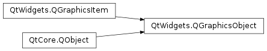

QGraphicsObject¶
Inherited by: QGraphicsTextItem, QGraphicsSvgItem
Note
This class was introduced in Qt 4.6.
Synopsis¶
Functions¶
- def
grabGesture(type[, flags=Qt.GestureFlags()]) - def
ungrabGesture(type)
Signals¶
- def
childrenChanged() - def
enabledChanged() - def
heightChanged() - def
opacityChanged() - def
parentChanged() - def
rotationChanged() - def
scaleChanged() - def
visibleChanged() - def
widthChanged() - def
xChanged() - def
yChanged() - def
zChanged()
Detailed Description¶
The
PySide2.QtWidgets.QGraphicsObjectclass provides a base class for all graphics items that require signals, slots and properties.The class extends a
PySide2.QtWidgets.QGraphicsItemwithPySide2.QtCore.QObject‘s signal/slot and property mechanisms. It maps many ofPySide2.QtWidgets.QGraphicsItem‘s basic setters and getters to properties and adds notification signals for many of them.
Parents and Children¶
Each graphics object can be constructed with a parent item. This ensures that the item will be destroyed when its parent item is destroyed. Although
PySide2.QtWidgets.QGraphicsObjectinherits from bothPySide2.QtCore.QObjectandPySide2.QtWidgets.QGraphicsItem, you should use the functions provided byPySide2.QtWidgets.QGraphicsItem, notPySide2.QtCore.QObject, to manage the relationships between parent and child items.The relationships between items can be explored using the
PySide2.QtWidgets.QGraphicsItem.parentItem()andPySide2.QtWidgets.QGraphicsItem.childItems()functions. In the hierarchy of items in a scene, thePySide2.QtWidgets.QGraphicsItem.parentObject()andPySide2.QtWidgets.QGraphicsItem.parentWidget()functions are the equivalent of theQWidget.parent()andQWidget.parentWidget()functions forPySide2.QtWidgets.QWidgetsubclasses.See also
-
class
PySide2.QtWidgets.QGraphicsObject([parent=nullptr])¶ Parameters: parent – PySide2.QtWidgets.QGraphicsItemConstructs a
PySide2.QtWidgets.QGraphicsObjectwithparent.
-
PySide2.QtWidgets.QGraphicsObject.childrenChanged()¶
-
PySide2.QtWidgets.QGraphicsObject.enabledChanged()¶
-
PySide2.QtWidgets.QGraphicsObject.grabGesture(type[, flags=Qt.GestureFlags()])¶ Parameters: - type –
PySide2.QtCore.Qt.GestureType - flags –
PySide2.QtCore.Qt.GestureFlags
Subscribes the graphics object to the given
gesturewith specificflags.- type –
-
PySide2.QtWidgets.QGraphicsObject.heightChanged()¶
-
PySide2.QtWidgets.QGraphicsObject.opacityChanged()¶
-
PySide2.QtWidgets.QGraphicsObject.parentChanged()¶
-
PySide2.QtWidgets.QGraphicsObject.rotationChanged()¶
-
PySide2.QtWidgets.QGraphicsObject.scaleChanged()¶
-
PySide2.QtWidgets.QGraphicsObject.ungrabGesture(type)¶ Parameters: type – PySide2.QtCore.Qt.GestureTypeUnsubscribes the graphics object from the given
gesture.
-
PySide2.QtWidgets.QGraphicsObject.visibleChanged()¶
-
PySide2.QtWidgets.QGraphicsObject.widthChanged()¶
-
PySide2.QtWidgets.QGraphicsObject.xChanged()¶
-
PySide2.QtWidgets.QGraphicsObject.yChanged()¶
-
PySide2.QtWidgets.QGraphicsObject.zChanged()¶
© 2018 The Qt Company Ltd. Documentation contributions included herein are the copyrights of their respective owners. The documentation provided herein is licensed under the terms of the GNU Free Documentation License version 1.3 as published by the Free Software Foundation. Qt and respective logos are trademarks of The Qt Company Ltd. in Finland and/or other countries worldwide. All other trademarks are property of their respective owners.